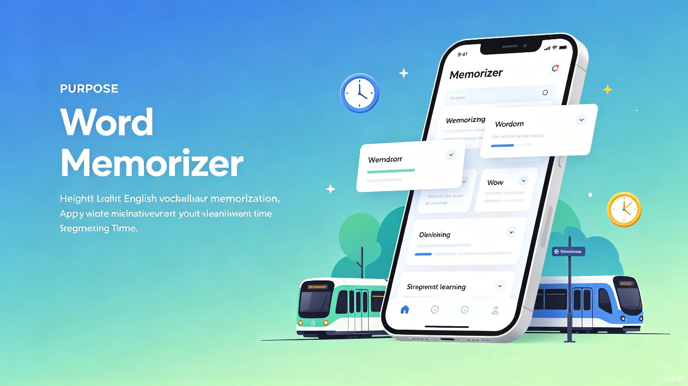
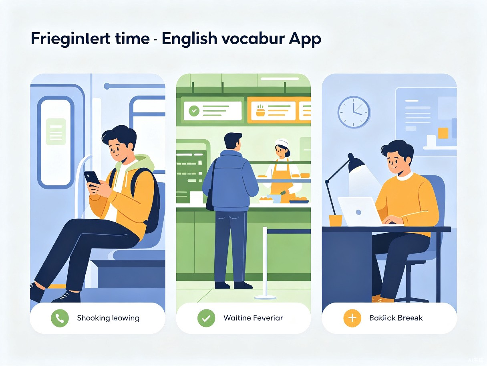
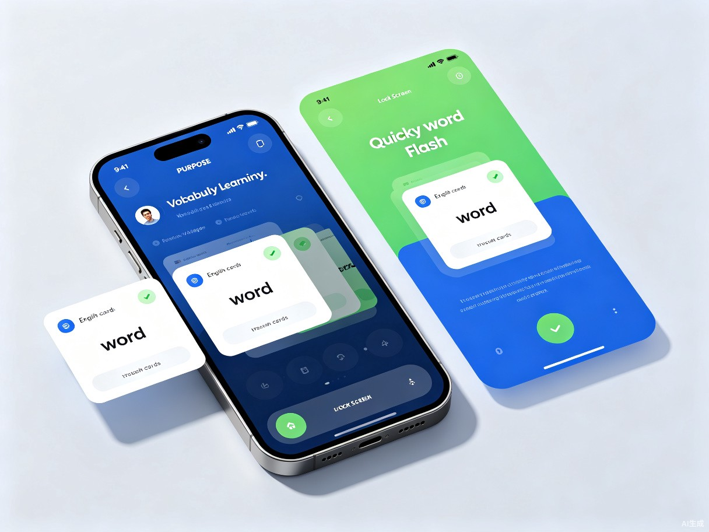

极致轻量化的单词记忆解决方案
很多人想背单词但抽不出整块时间，传统背单词APP打开流程繁琐，还容易被手机里的其他消息分心，导致单词计划总是半途而废。
自己和身边朋友都有"想背单词但坚持不下来"的困扰，发现每天其实有很多碎片时间（通勤、排队、摸鱼），但缺少一个足够轻量、打开就能记、记完就能走的工具。
一款主打"极致轻量化"的移动端单词记忆App，配合桌面小组件和锁屏插件，让用户不用打开App就能快速过几个单词。
零启动成本、无广告干扰、专注碎片场景。不追求"功能最全"，只追求"打开最快、用完即走"的极致体验。
精准定位碎片时间学习者
大学生、考研/考公备考人群、职场英语学习者、所有有碎片化背单词需求的英语爱好者。

传统APP打开要等加载、还要选单元、点开始，一套流程下来兴致都没了
手机诱惑太多，打开APP后很容易被消息、短视频拐走，背单词变成刷手机
碎片时间太短，还没进入状态就结束了，利用效率极低
积少成多，让学习融入生活
零启动 · 零干扰 · 零负担

基于艾宾浩斯遗忘曲线，自动安排复习时机，在碎片时间推送最需要复习的单词。
四六级、考研、雅思、托福、商务英语等主流词库，支持自定义导入。
只展示最核心的学习数据：今日单词数、连续天数、累计词汇量，不制造焦虑。
无需联网即可使用，地铁、电梯等无信号场景也能正常学习。
让背单词成为一种生活习惯
单词随时记的核心理念是"减法设计"——不做功能最全的背单词App，只做最适合碎片时间的背单词工具。通过桌面小组件、锁屏插件等零启动入口，将背单词的启动成本降到几乎为零；通过极简的交互流程，让用户在1分钟内就能完成一次有效的单词记忆。
我们相信，学习不应该是一件需要"下定决心"才能开始的事。当背单词变得像解锁手机看时间一样简单，坚持就不再是难题。积少成多，每一个碎片时间的积累，终将汇聚成显著的进步。